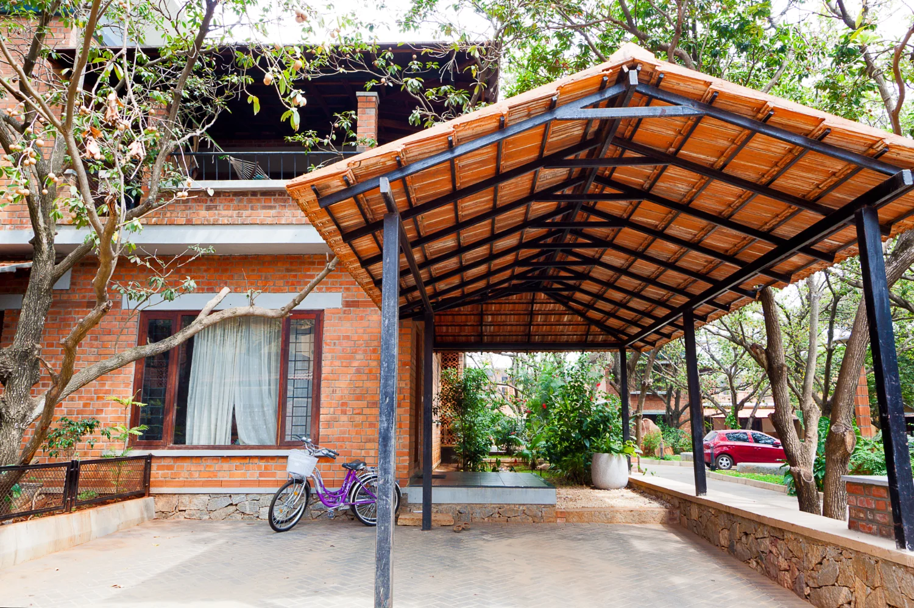
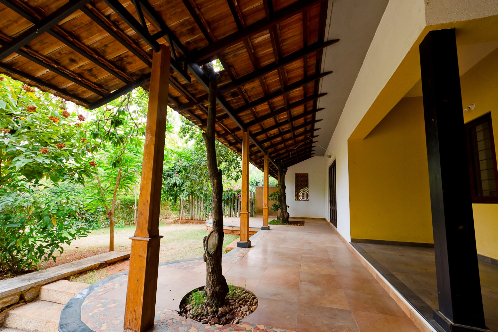
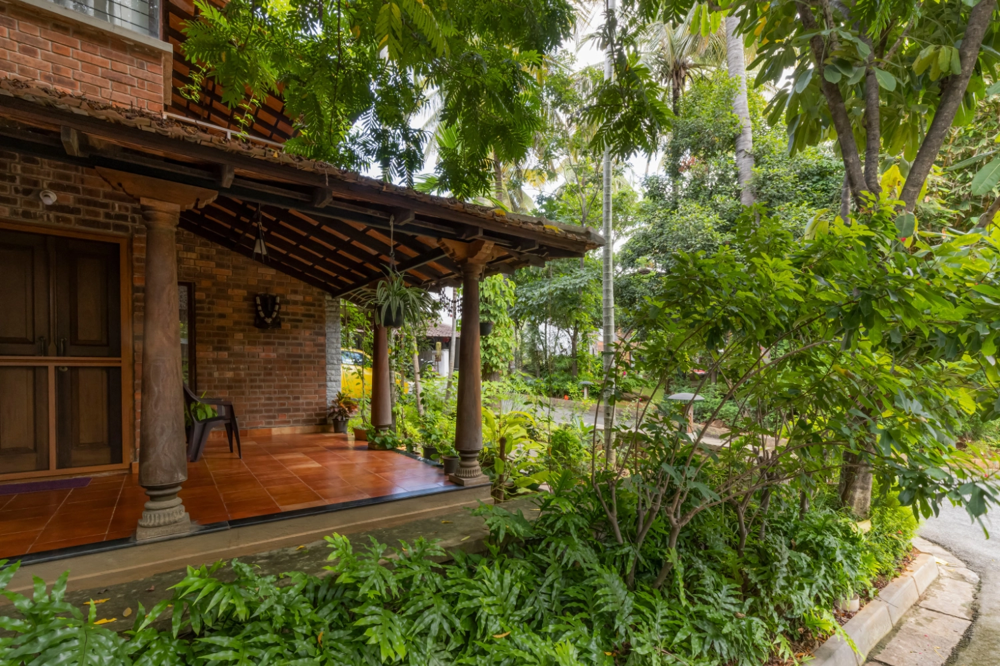
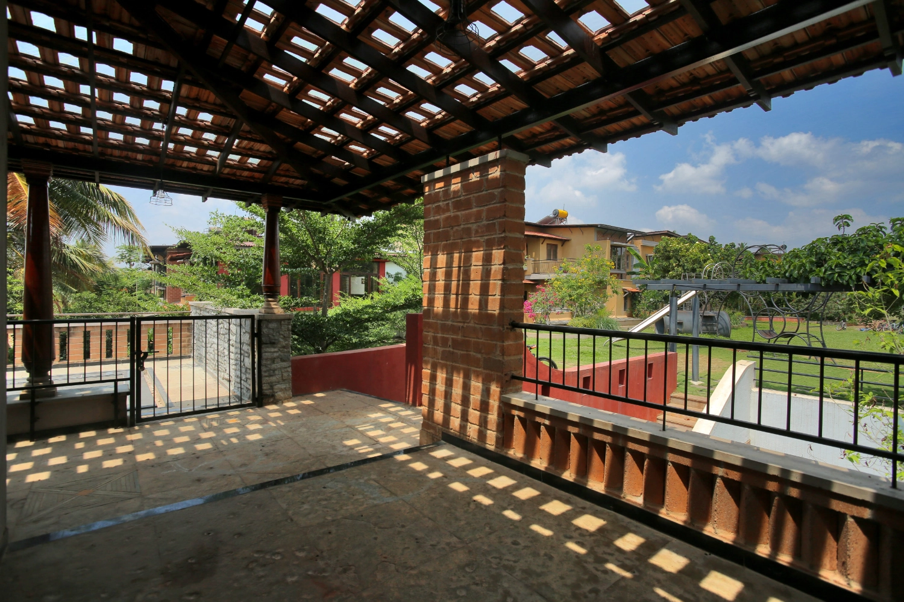
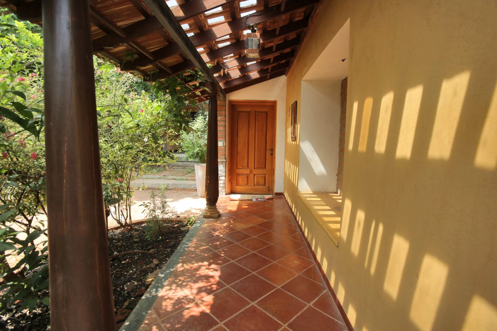
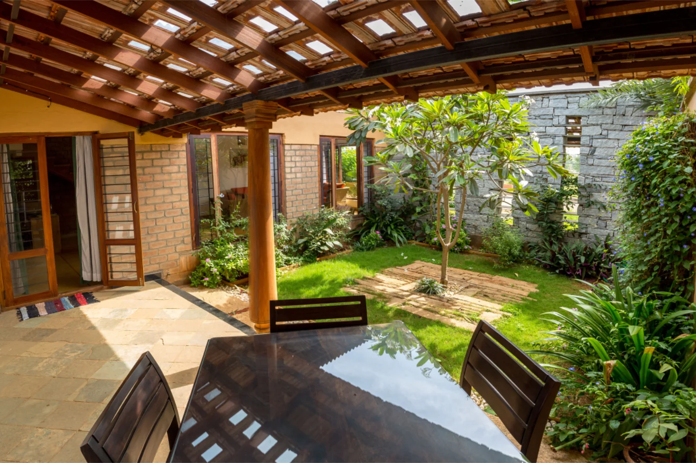
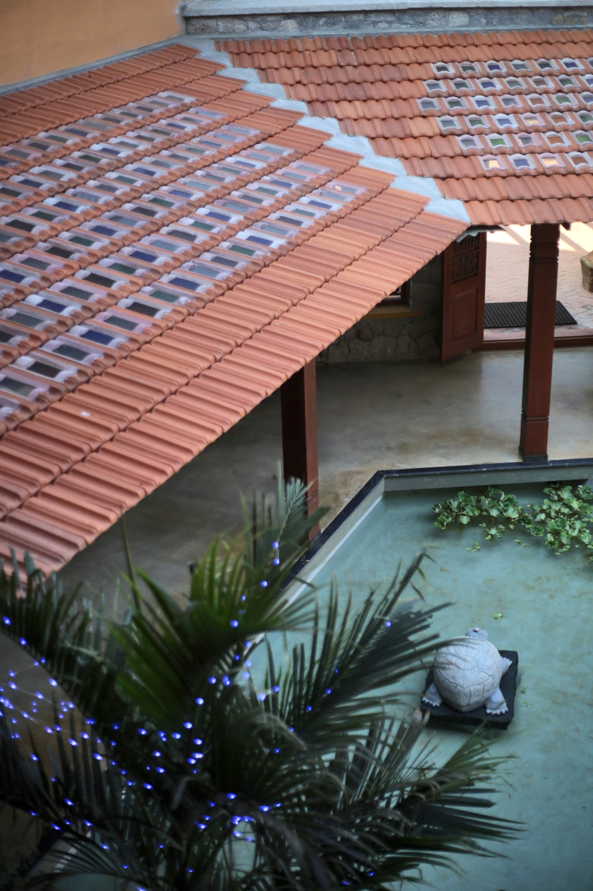
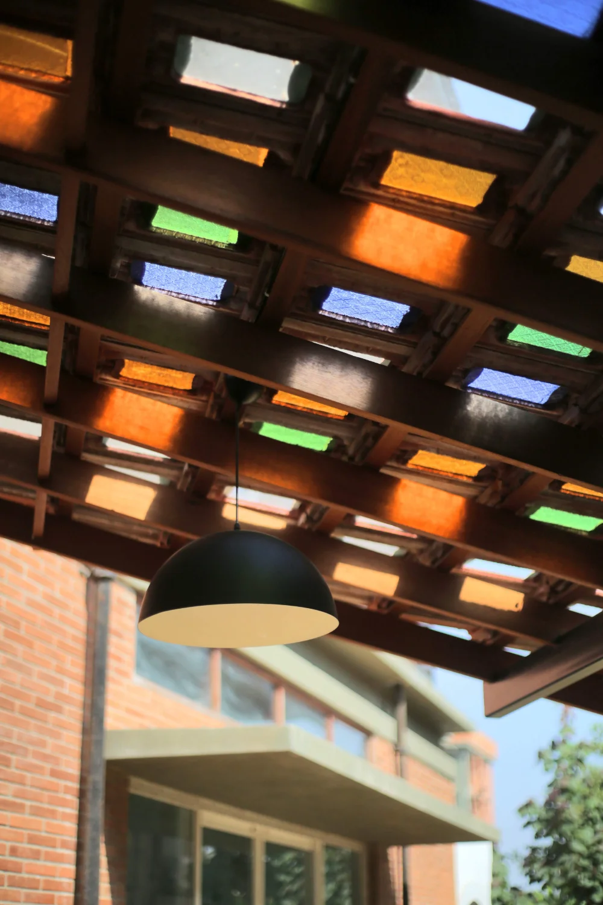
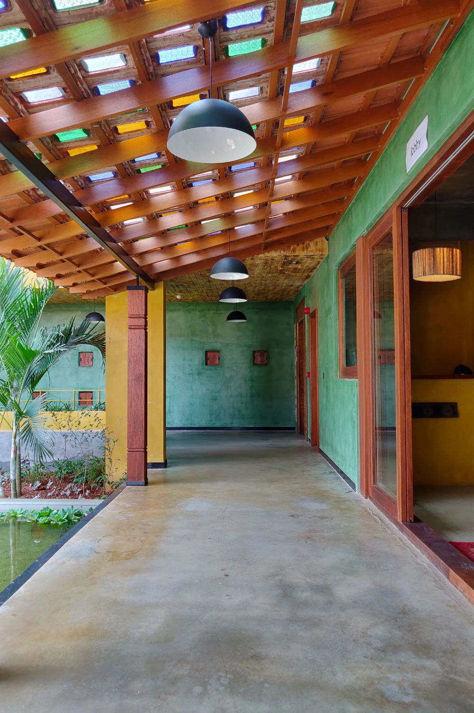
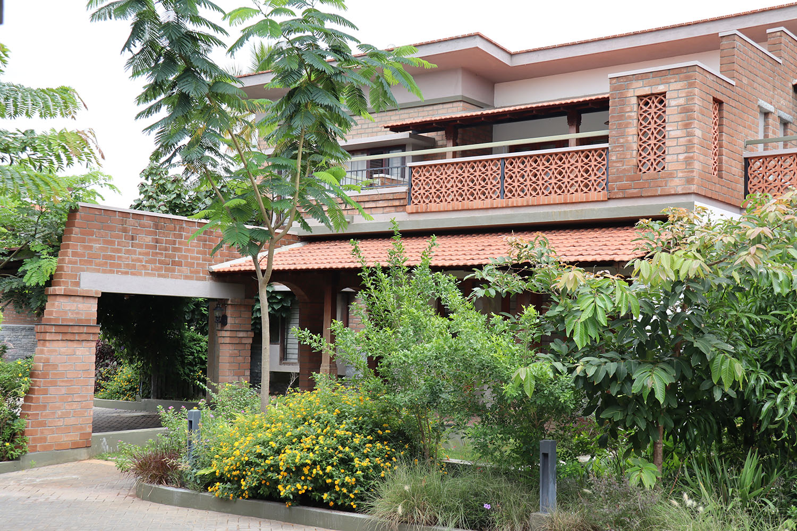

Materials
Materials
When asked to sketch a house, our hands instinctively craft familiar patterns – vertical lines for walls, rectangles for windows and doors, and then – there it is, that timeless triangle. That classic sloping roof often adorned in the deep hues of reddish-brown, reminiscent of the iconic Mangalore tiles. It’s a scene that transcends generations and borders, a universal image ingrained in our collective memories.
Especially in southern India, these tiles aren’t just architectural elements; they’re symbols of warmth, tradition, and cherished recollections passed down through time.
Legacy of Mangalore tiles
Originating from the coastal city of Mangalore in India, these tiles have graced the roofs of countless homes for over a century. Made from locally sourced clay, these tiles were first produced by the Basel Mission back in the 1860s. Their undulating form and deep reddish-brown shade quickly became synonymous with the quintessential Indian roof.
But more than mere aesthetics, the Mangalore tiles stood out for their functionality and sustainable importance.
1
Natural Material & Eco-Friendly Production
Mangalore tiles are crafted from locally abundant clay, making them a prime example of eco-friendliness. The traditional tile-making process handed down through generations, minimises environmental impact. Clay is harvested sustainably, and the production involves a low carbon footprint, preserving the delicate balance of nature.
2
Efficient Thermal Insulation
Their undulating form serves as a natural thermal insulator, ensuring homes remain comfortably cool during scorching summers and warm during chilly winters. This innate insulation minimises the reliance on artificial heating and cooling systems, making a commendable contribution to energy conservation.
3
Durability and Cultural Significance
While they may seem delicate, Mangalore tiles have demonstrated their remarkable durability over time. With regular maintenance, they can protect homes for generations. In fact, the occasional need for replacement supports the continued existence of traditional tile-making craftsmanship, fostering cultural heritage and local livelihoods.
Evolution of Mangalore Tiles: Embracing Modernity
As times have changed, the once-prominent Mangalore tiled roof witnessed a decline, overshadowed by the sprawling wave of concrete structures. This change marked a significant transition in architectural preferences, with the industry facing challenges in keeping traditional practices alive in the face of rapid urbanisation and modernisation.
Yet, the resilient nature of Mangalore tiles and the timeless aesthetic they offer ensured they didn’t fade into oblivion. Their utility and charm have been rediscovered, repurposed, and repositioned to fit into the evolving architectural landscape.
Recognising this potential, GoodEarth has adeptly integrated Mangalore tiles into the designs, especially emphasising their role in crafting semi-shaded spaces with a blend of tradition and innovation.
1. Mangalore Tiles in Entryways, Patios, & Verandahs:
Evoking the charm of yesteryears, these tiles, supported by mild steel instead of traditional wooden beams, create beautiful semi-shaded areas that provide a respite from the sun while allowing a bit of it to filter through, crafting a warm, ambient space.

Semi-shaded Entryway

MS Supported Patio

Ambient Verandah
2. Integrating Clear Glass with Mangalore tiles as skylights:
As a symphony of light and shade, Mangalore tiles with clear glass enables spaces to bask in the glow of natural sunlight, offering residents a radiant ambience that stays true to traditional aesthetics while embracing modern functionality.

Skylight Details

Ambient Skylight Glow

Glass & Clay Tile Integration
3. Artistic Expression in Commercial Spaces:
Pushing the envelope of creativity, GoodEarth incorporated stained glass in lieu of clear glass with the Mangalore tiles at the Confluence Sports Club. This fusion transforms the entryway with its radiant hues adding vibrance and drama, hinting at the vast potential of these tiles in commercial settings.

Confluence Club Entryway

Radiant Colored Light

Artistic Expression Details
Bridging Past & Future
Mangalore tiles are a testament to how traditional materials, when employed with innovation, can cater to modern needs without compromising on sustainability. They adapt, evolve, and find relevance even as the world around them changes. In Indian architecture today, they stand as a testament to the enduring beauty of tradition and the innovative spirit of modern design. And as we move towards a future where sustainability becomes imperative, it is such age-old practices and materials that will pave the way forward.
Further reading:
If you’ve been intrigued by the sustainability and beauty of Mangalore tiles, you might be interested to dive deeper into the myriad advantages of clay roofing. Discover how these tiles not only add aesthetic value but also play a pivotal role in energy conservation, longevity, and more.

Click to Zoom
Mangalore roof tiles save energy, add beauty, last longer